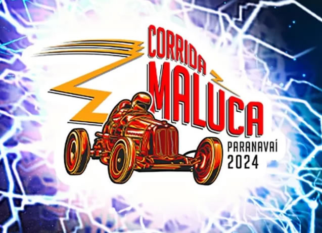

CORRIDA MALUCA EM PARANAVAÍ
A 3ª edição da Corrida Maluca nem começou e já está batendo recordes. O evento, que foi um sucesso absoluto de público e participação nas edições anteriores, teve para este ano 66 inscrições, superando as 57 inscrições de 2023. |
Após o adiamento do evento (que seria realizado nos dias 18 e 19 de maio) devido as enchentes no Rio Grande do Sul, o município já inicia preparação para que a Corrida Maluca aconteça nos dias 29 e 30 de junho, no Parque Ouro Branco.
A Corrida Maluca é um evento organizado pelo município de Paranavaí, sob responsabilidade da Secretaria de Comunicação Social e Fundação Cultural, com apoio irrestrito e fundamental das secretarias de Esportes e Lazer, Desenvolvimento Econômico e Turismo, Meio Ambiente, Agricultura, Saúde, Educação e Diretoria de Trânsito.
Inspirada em provas que acontecem a nível mundial, a dinâmica da corrida contará com grupos de pessoas que gostam de aventuras e desafios, dispostas a utilizarem seu próprio “carrinho” para descer uma ladeira em alta velocidade.
Nesta edição, além da Corrida Maluca, o município prepara uma edição do “Cosplay Maluco”. Após sucesso da primeira edição em 2023, durante o Inovatech, os cosplayers terão a oportunidade de se apresentarem durante a Corrida Maluca também.
|